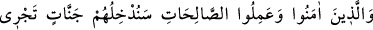

57- İnanıp iyi işler yapanları da zemîninden ırmaklar akan cennetlere sokacağız.
Orada ebedî olarak kalacaklardır. Orada onlar için tertemiz eşler vardır ve onları
koyu bir gölgeye koyarız.
Allah’a, Hz. Muhammed’e, Kur’ân’a ve diğer âyet ve mûcizelere “inanıp” Allah’ın
emrettiği “iyi işler yapanları da zemîninden ırmaklar akan cennetlere sokacağız.
Orada ebedî olarak kalacaklardır.” Oradan, hiç çıkmadan ve ölmeden dâimâ orada
kalacaklardır. “Orada onlar için tertemiz”, yâni dünyâ kadınlarında bulunan hayız,
nifas gibi tabîî kirlerden ve kin, kıskançlık ve çirkin hallerden temizlenmiş “eşler
vardır. Ve onları koyu bir gölgeye” hiç açıklık olmadan uzayıp giden, güneşin yok
edemeyeceği yâhut mutedil bir gölgeye “koyarız.” Zamanın mutedili, ne sıcak ne de
soğuk olandır. Mekanın mutedili ise ne düz, ne de engebeli olandır. “Zalîl” kelimesi,
gölge mânâsındaki “zıll” lafzından mânâyı pekiştirmek için türetilmiştir. “Koyu gölge”
demektir.
Eğer, “Cennette sıcaklığıyla eziyet verecek bir güneş olmadığına göre cennetin koyu
bir gölgeye sahip olmakla vasfedilmesinin faydası nedir? Yine dünyâda devamlı gölge
olan ve güneş ışığı ulaşmayan yerlerin havası kokuşmuş, bozuk ve rahatsız edici olduğu
halde cennetin havâsını böyle vasfetmenin mânâsı nedir?” diye bir soru soracak olursan,
derim ki: “Arap memleketleri son derece sıcak olduğundan onların gözünde gölge en
büyük rahatlama sebeplerinden biridir. Onlar bunu rahatlıktan kinâye olarak kullanırlar.
Peygamber Efendimiz de: “Sultan, Allah’ın yeryüzündeki gölgesidir.”[51] buyurmuştur.
Gölge rahatı ifâde ettiğine göre, koyu gölge rahatlığın çok ileri seviyede olduğundan
kinâye olmaktadır. Fahreddin Râzî tefsîrinde “Benim gönlüm de buna meylediyor.” der.
Rasûlullah (s.a.v) şöyle buyurmuştur: “Cennette öyle bir ağaç vardır ki, binitli biri
bu ağacın gölgesinde yüz sene yolculuk etse yine de o gölgeyi katedemez. İsterseniz
“Uzamış gölgeler” (el-Vakıa, 56/30) âyetini okuyun. Cennette, hiç bir gözün
görmediği, hiçbir kulağın duymadığı, hiçbir beşerin aklına gelmeyecek nimetler
vardır. Dilerseniz “Yaptıklarına karşılık olarak onlar için ne mutluluklar
saklandığını hiç kimse bilmez.” (es-Secde, 32/17) âyetini okuyun. Cennetten kırbaç
kadar bir yer, dünyâdan ve içinde bulunanlardan daha hayırlıdır. Dilerseniz “Kim ki
ateşin elinden çekilip kurtarılır da cennete konursa, işte o kurtuluşa ermiştir.” (Âl-
i İmran, 3/185) âyetini okuyun.”[52]
Yine Rasûlullah (s.a.v.) şöyle buyurmuştur: “Cennetlikler, kirpikleri, kaşları ve
saçları dışında vücutlarının diğer yerlerinde kılları olmayan, kıvırcık saçlı, sakalsız
ve bıyıksız gençler halinde olacaklardır.” (Yani ne eteklerinde ne de koltuk altlarında